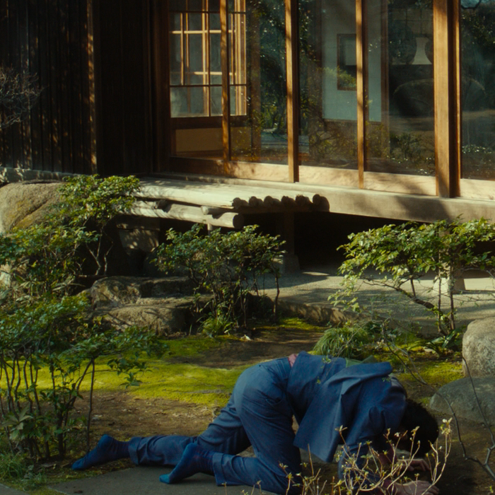
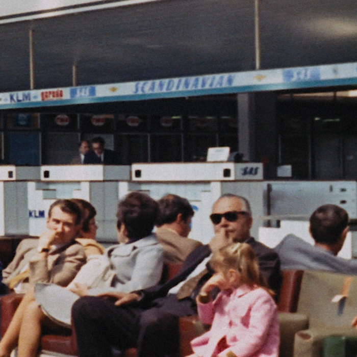

Resizing is a very complex topic. However, for simple downscaled encodes, one doesn't need to know very much information. As such, this page will only cover the necessities for downscaling. Those interested in knowing more about resampling should refer to the Irrational Encoding Wizardry's guide's resampling page for more information.
You can, however, check the later subchapters for some slightly more advanced topics such as descaling and rescaling or chroma resampling and shifting, both of which are absolute necessities to know about when encoding anime.
Downscaling
For downscaling, the go-to resizer is a spline36 resizer:
resize = src.resize.Spline36(1280, 720, dither_type="error_diffusion")
The parameters here should be straightforward: simply adjust width and height as necessary.
Don't worry about dither_type="error_diffusion" yet, simply leave this as-is; all it does is make for a nicer looking output.
The explanation for this parameter can be found in the dithering chapter.
Finding target dimensions
The desired dimensions for standard resolutions should be fairly known for 16:9 content: \(3840\times2160\) for 2160p, \(1920\times1080\) for 1080p, \(1280\times720\) for 720p.
However, most films aren't made in this aspect ratio. A more common aspect ratio would be 2.39:1, where the video is in \(2048\times858\). Consumer products are usually in the aforementioned resolutions, so it's more likely to see something like \(1920\times804\) after black bars are cropped.
Going from this to 720p gets us exactly \(1280\times536\):
\[\begin{align} w &= \frac{720}{1080}\times1920=1280 \\ h &= \frac{720}{1080}\times804 =536 \end{align} \]
However, this won't always be the case. Let's say your source is in \(1920\times806\):
\[\begin{align} w &= \frac{720}{1080}\times1920=1280 \\ h &= \frac{720}{1080}\times806 =537.\overline{3} \end{align} \]
Obviously, we can't resize to \(537.\overline{3}\), so we need to find the closest height with the lowest aspect ratio error. The solution here is to divide by two, round, then multiply by two again:
\[ h = \mathrm{round}\left( \frac{720}{1080} \times 806 \times \frac{1}{2} \right) \times 2 = 538 \]
In Python:
height = round(1280 / src.width / 2 * src.height) * 2
Now, we feed this to our resize:
resize = src.resize.Spline36(1280, height, dither_type="error_diffusion")
Alternatively, if our source was cropped on the left and right instead of top and bottom, we do:
width = round(720 / src.height / 2 * src.width) * 2
If you (understandably) don't want to bother with this, you can use the zresize wrapper in awsmfunc:
resize = awf.zresize(src, preset=720)
With the preset option, you don't have to bother calculating anything, just state the target resolution (in height) and it'll determine the correct dimensions for you.
Notes
For resizing uneven crops, please refer to the dirty lines chapter, specifically the FillBorders section and the notes.
Additionally, it is worth noting that resizing should not be done at the beginning of your script, as doing so can damage some of the filtering performed and even reintroduce issues.
Ideal resolutions
For digital anime, please refer to the descaling subchapter for this. It is extremely rare for descaling to be relevant for live action, too, but if your source is especially blurry and clearly a cheap production, it's also worth looking into.
It's common knowledge that not every source should be encoded in the source's resolution. As such, one should know how to determine whether a source warrants e.g. a 1080p encode or if a 720p encode would suffice from a detail-retention standpoint.
To do this, we simply compare a source downscaling and scaled back up:
downscale = src.resize.Spline36(1280, 720, dither_type="error_diffusion")
rescale = downscale.resize.Spline36(src.width, src.height, dither_type="error_diffusion")
Now, we interleave the two, then go through the video and see if details are blurred:
out = core.std.Interleave([src, rescale])
We can also perform all these with the UpscaleCheck wrapper from awsmfunc:
out = awf.UpscaleCheck(src)
Let's look at two examples. First, Shinjuku Swan II:

Here, edges get very blurry in the rescale, meaning a 1080p is warranted. This is especially noticeable in the plants' leaves.
Now, The Way of the Dragon:

Here, we see grain is blurred ever so slightly, and some compression artifacts are warped. However, edges and details are not affected, meaning a 720p would do just fine here.